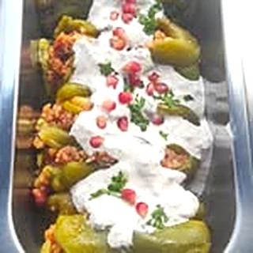
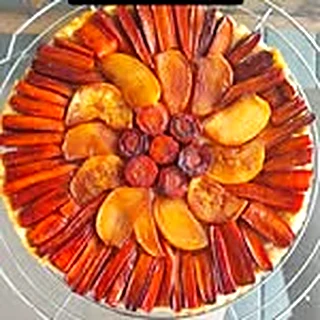
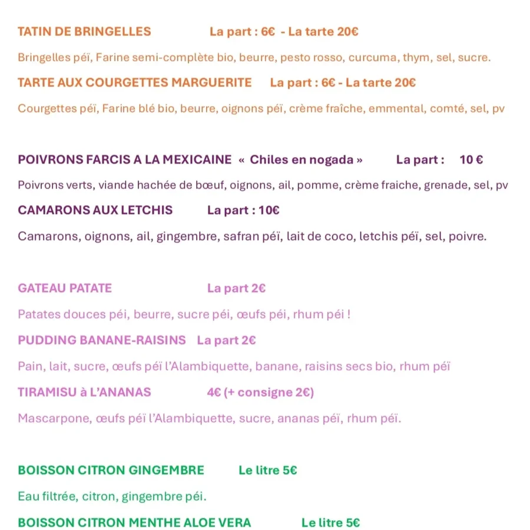
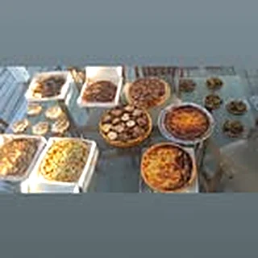
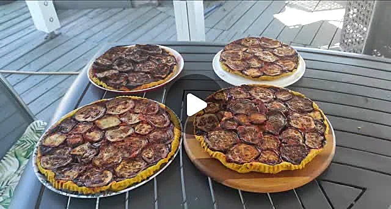

Salé
Tatin de bringelles
La part 6 € · la tarte 20 €
Bringelles péi, farine semi-complète bio, pesto rosso, curcuma, thym.
Musicien à la retraite, passionné de cuisine : chaque samedi matin, des plats préparés avec des produits péi, à emporter.
« Musicien à la retraite je me suis lancé dans la confection de plats préparés. J'ai toujours été passionné par la cuisine et la partager. »
Une cuisine de partage, qui voyage : un jour une escapade mexicaine, le lendemain un classique d'ici. Les légumes, le safran, les letchis, les œufs et le rhum viennent de l'île, et les recettes se renouvellent chaque semaine.





Les Camaron aux letchis accompagnés de son jus citron gingembre, c'était excellent ! Repas qui s'est terminé avec des rochers coco, un régal 😀Constance, avis Google
Recettes délicieuses, originales, avec des produits issus des exploitants locauxBénédicte, avis Google
Cuisine extra et sourire au rendez vous !Clara, avis Google
Repas de famille, réveillon entre amis : demandez à Cricri ce qu'il prépare pour les fêtes, et réservez vos parts ou vos tartes entières.
Vente à emporter
📍 23 bis chemin Bateau, 97425 Les Avirons